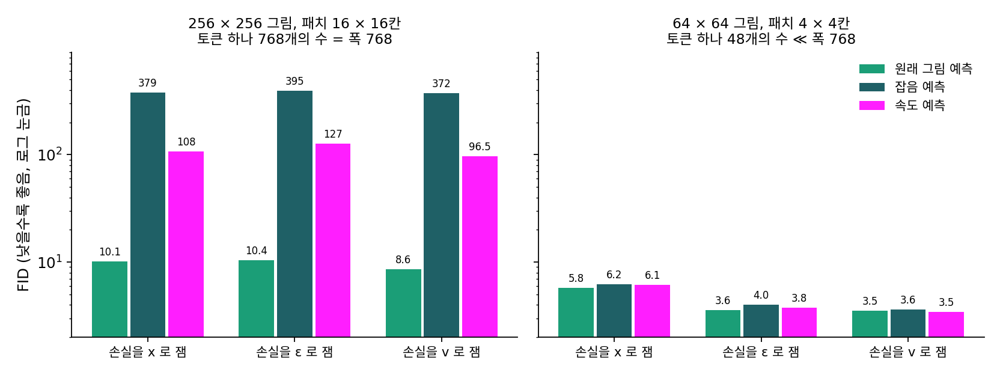
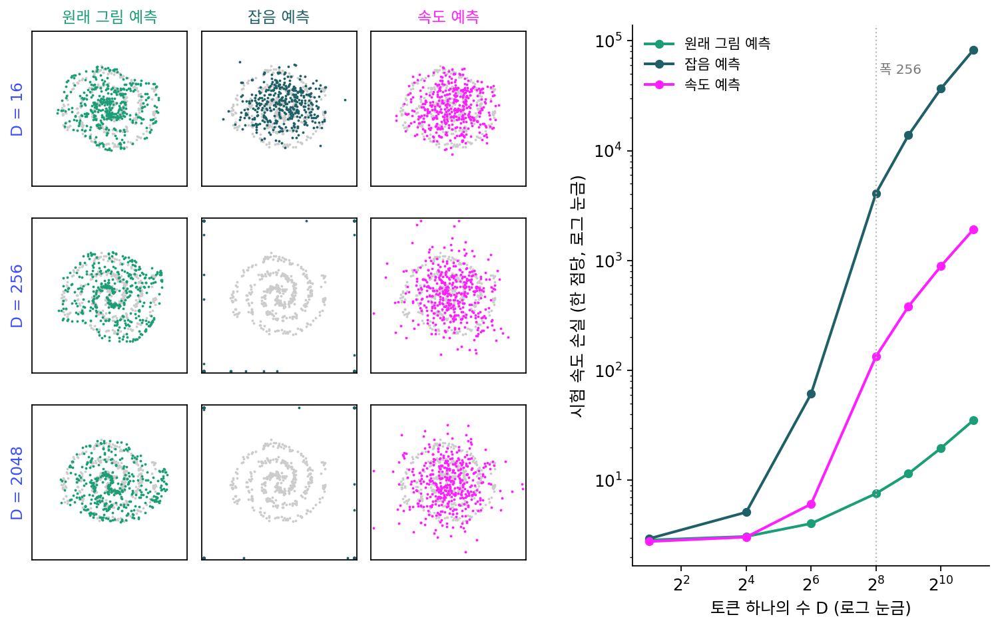

12장 — 디퓨전 트랜스포머: U-Net 자리에 트랜스포머를
원래 그림 예측: 패치가 폭만큼 커지면 무엇을 맞혀야 하나
견주어 본 여섯 모델은 모두 VAE 로 줄인 잠재 그림을 패치로 자르고 속도(또는 잡음)를 내놓는다. 토큰 하나가 픽셀 16 × 16칸을 맡으니, 픽셀 그림을 16 × 16칸씩 바로 잘라도 토큰은 4,096개로 같고 압축기도 필요 없다. 다른 점은 토큰 하나에 든 수다. FLUX.1 의 토큰 하나는 2 × 2 × 16 = 64개의 수를 폭 3072짜리 벡터로 옮기지만, 픽셀 16 × 16칸은 16 × 16 × 3 = 768개의 수다.
768개의 수를 아무렇게나 뽑으면 거의 확실히 지지직거리는 잡음이고, 의미 있는 그림은 차원이 낮은 매끈한 면 근처에만 모여 있다(매니폴드 가설). 깨끗한 그림 조각은 그 좁은 면 위에 있지만, 섞은 잡음은 768개의 방향 모두로 고르게 퍼져 있다. 그렇다면 깨끗한 그림을 맞히는 쪽이 쉬워야 하지 않을까? 그런데 처음 크게 성공한 모델은 잡음을 맞혔고, 뒤의 모델들은 그것을 VAE 로 줄인 잠재 공간에서 했다. 왜 그랬을까?
역사: 잡음을 맞히고, 잠재로 가고, 다시 그림으로
호와 동료들의 2020년 DDPM 논문은 신경망이 무엇을 내놓을지를 CIFAR-10(가로세로 32픽셀 컬러 그림, 한 장에 수 3,072개)에서 견주었다. 잡음을 맞히되 모든 걸음에 같은 비중을 준 단순한 손실이 FID 3.17로, ELBO 그대로 학습한 13.22~13.51보다 훨씬 좋았다(논문 표 2). 원래 그림을 맞히는 길은 괄호 속 한 문장, 「초기 실험에서 그림의 질이 더 나빴다」뿐이고 숫자도 까닭도 없다. 신경망은 첫 층에서 칸마다 수를 3개에서 128개로 넓히는 U-Net 이었다.
2022년 샐리먼스(Tim Salimans)와 호는 출력 꼴 넷(원래 그림, 잡음, 둘을 함께, 둘을 섞은 v)에 손실의 가중치 셋을 곱한 열두 칸을 CIFAR-10 에서 견주었다. 잡음 예측에 한 가지 가중치를 짝지은 칸만 학습이 발산했고, 나머지 열한 칸은 FID 2.45~2.65(확률적 샘플러)로 고만고만했다. 논문은 「v 가 가장 안정하고, 이 실험에서는 원래 그림을 바로 맞히는 쪽이 조금 더 좋았다」고 적었다. 32 × 32 그림에서는 무엇을 맞히느냐보다 걸음마다의 비중이 더 큰 손잡이였다.
잠재 디퓨전은 픽셀 모델이 「눈에 띄지 않는 세부를 모델링하는 데 지나친 용량을 쓴다」며 잡음 맞히기를 압축기의 잠재로 옮겼고, 손실은 그대로 두었다. 이 문제를 다시 연 것은 2025년 11월 MIT 의 리(Tianhong Li)와 허(Kaiming He)다. 논문 제목은 「잡음 제거 생성 모델이 잡음을 제거하게 하자(Back to Basics: Let Denoising Generative Models Denoise)」다. 256 × 256 그림을 16 × 16칸 패치로 잘라 폭 768인 ViT 에 넣고 출력 꼴 셋과 손실을 재는 공간 셋의 아홉 칸을 견주자, 토큰 하나의 수가 폭과 같은 이 설정에서 잡음·속도를 내놓는 여섯 칸은 FID 96~395로 무너지고, 원래 그림을 내놓는 세 칸만 8.6~10.5였다. 64 × 64 그림을 4 × 4칸으로 자르면(토큰 하나에 48개) 아홉 칸이 모두 괜찮았다. 그들은 이 구조를 「그냥 그림 트랜스포머(Just image Transformers)」, 줄여 JiT 라 불렀다.

두 갈래 나선을 높은 차원에 묻기
무너진 까닭이 정말 「그림은 좁은 면 위에, 잡음은 모든 방향에」라는 데 있는지 확인하려면, 데이터가 어디에 놓였는지 정확히 아는 가장 작은 경우가 필요하다. 2차원 평면 위의 두 갈래 나선을 D차원 공간에 무작위 방향으로 놓자. 점 하나는 D개의 수로 적히지만 신경망이 모르는 평면 위에서만 움직인다. D는 토큰 하나에 든 수, 2는 그림이 실제로 움직이는 차원의 자리다. 잡음 섞기는 이 책의 플로우 매칭 그대로다.
신경망은 폭 d = 256인 5층 MLP 이고, 내놓은 것을 위의 식으로 속도로 바꿔 셋 다 같은 속도 공간에서 손실을 잰다(분모는 학습 때 0.05, 샘플링 때 0.01에서 자른다). 5,000걸음 학습한 뒤 시험 점 4,096개에서 손실을 재고, 오일러 100걸음으로 만든 점 4,096개가 평면에서 얼마나 떨어졌는지(참 데이터는 0)와 평면 위에서 나선과 얼마나 다른지(조각 바서슈타인 거리, 참 나선 두 벌 사이는 0.02~0.05)를 쟀다. 시드 셋의 평균이다.
| 토큰 하나의 수 D | 시험 속도 손실: 원래 그림 / 잡음 / 속도 예측 | 만든 점의 평면 밖 거리: 원래 그림 / 잡음 / 속도 예측 |
|---|---|---|
| 2 | 2.86 / 2.94 / 2.78 | 0 / 0 / 0 |
| 16 | 3.08 / 5.13 / 3.04 | 0.017 / 0.15 / 0.020 |
| 64 | 4.04 / 61.2 / 6.08 | 0.026 / 8.47 / 0.20 |
| 256 | 7.58 / 4,097 / 134 | 0.042 / 1,934 / 10.1 |
| 512 | 11.5 / 13,827 / 382 | 0.050 / 3,733 / 18.6 |
| 2048 | 35.2 / 82,477 / 1,916 | 0.080 / 8,744 / 43.4 |

D = 16까지는 셋이 비슷하다. 잡음 예측은 D = 64부터, 속도 예측은 폭과 같은 256부터 손실이 D를 따라 치솟고, 잡음 예측은 샘플링이 터져 점이 화면 밖으로 날아갔다. 원래 그림 예측은 D = 2048에서도 손실 35, 평면 밖 거리 0.08이다. 속도 예측의 점을 평면으로 되돌려 찍으면 나선 모양은 흐릿하게나마 남는다(조각 바서슈타인 0.15~0.18, 원래 그림 예측 0.11~0.17). 무너진 곳은 평면 위가 아니라 잡음이 퍼져 있던 평면 밖이다.
예상과 다른 결과도 둘 있었다. D가 작을 때 평면 위 모양은 속도 예측이 가장 좋았다(D = 2에서 0.07, 원래 그림 예측 0.18). 또 D = 512에서 폭을 1024로 넓혀도 속도 예측의 손실은 382에서 174로 줄었을 뿐이다. 폭을 64로 좁혀도 원래 그림 예측은 11.5 그대로였다.
이렇게 신경망이 섞은 잡음이나 속도가 아니라 깨끗한 그림 자체를 내놓게 하고, 샘플러가 쓸 속도는 위의 식으로 바꿔 얻는 꼴을 원래 그림 예측 (깨끗한 그림을 바로 맞히도록 신경망의 출력을 정하기 / x-prediction)이라 한다. 같은 정보라던 세 꼴이 왜 이렇게 갈라지는지, 신경망의 어느 자리가 막히는지는 아래 문제에서 따져 보자.
ML에서: 픽셀 위의 트랜스포머
리·허의 최종 모델은 신경망이 원래 그림을 내놓고 손실은 속도 공간에서 재는 조합이다(논문은 시간을 거꾸로 적어 1이 데이터, 속도도 x − ε 이지만 내용은 같다). ImageNet 256 × 256 에서 가장 큰 JiT-G/16(매개변수 20억)은 FID 1.82, 512 × 512 의 JiT-G/32 는 1.78이었다. 같은 표에서 잠재 위의 DiT-XL/2 는 2.27이지만, 미리 학습한 바깥 그림 인코더의 특징을 함께 쓰는 잠재 모델(표현 정렬 REPA 1.42, 표현 오토인코더 RAE 1.13)은 아직 앞선다. 한계도 논문에 있다. 실험은 분류 라벨을 조건으로 한 ImageNet 뿐이고 글로 그림을 만드는 실험은 없다. 가장 큰 모델은 320에폭 무렵부터 FID 가 나빠져 학습을 일찍 멈췄다.
ComfyUI 에도 들어왔다. Chroma Radiance 의 한 판과 HiDream-O1 은 픽셀 패치에서 원래 그림을 내놓고 (입력 − 출력)/시간으로 속도를 만든다(comfy/ldm/chroma_radiance/model.py, comfy/ldm/hidream_o1/model.py). 패치가 16 × 16칸이면 1024 × 1024 픽셀 그림도 토큰 4,096개라, 몸통의 계산은 잠재 모델과 같은 꼴이다.
문제 16. 젖은 송장을 메모 한 장으로
비에 젖은 택배 송장 사진이 두 사무실에 똑같이 있다. 송장은 60칸짜리 글자판이고, 칸마다 0~9단계의 얼룩이 번졌다. 이 구역의 주소는 모두 주소록에 네 자리 번호로 올라 있다. 첫째 사무실이 둘째 사무실로 넘길 수 있는 것은 20자짜리 메모 한 장뿐이다. (가) 원래 송장을 알려 주려면 몇 자가 필요한가? 얼룩 무늬를 칸마다 알려 주려면? (나) 둘째 사무실이 원래 송장과 얼룩 무늬를 둘 다 알아야 한다면 무엇을 적어 보내야 하는가? (다) 칸마다 「얼룩 − 원래 글자」 같은 섞은 값을 보내면 어떤가?

(가)는 주소록 번호면 4자, 얼룩은 60칸이니까 60자요. 메모가 20자라 얼룩은 못 보내요. (나)는 둘 다 알아야 하니까… 주소 4자에 얼룩 16칸까지만 보내고 나머지 44칸은 포기해야겠네요.

둘째 사무실 손에 이미 무엇이 있었죠?

젖은 사진이요. 아, 사진은 원래 송장 위에 얼룩이 얹힌 거니까, 주소 번호로 깨끗한 송장을 뽑아서 사진에서 빼면 얼룩이 통째로 나와요. 4자면 둘 다 알아요.

(다)는 섞은 값도 칸마다 다른 수라서 60자가 들어. 섞은 값 안에 얼룩이 통째로 들어 있으니까, 얼룩을 보내는 것만큼 길 수밖에 없어.

그래요. 메모의 길이를 정하는 것은 보내는 것이 몇 칸에 걸쳐 제멋대로 움직이느냐예요. 주소는 주소록 1만 곳 안에서만 움직이고, 얼룩은 60칸 모두에서 따로 움직여요.

받는 쪽이 이미 가진 사진에서 나머지를 계산할 수 있으면, 좁은 쪽만 보내면 되는 거네요.

팀원이 원본 파일을 이미 갖고 있으면 고친 파일 전체를 보내지 않고 「몇 번 버전으로 되돌려」만 보내는 거랑 같네요.
문제 17. 폭이 막는 자리
신경망의 마지막 은닉 층은 폭이 d 이고, 그 뒤 선형 층 Wout(D × d 행렬)과 치우침 b 가 D개의 수를 내놓는다. 위의 잡음 섞기와 세 식에서 (가) 출력 꼴마다 속도 오차 v̂ − v 를 신경망이 맞혀야 할 것의 오차로 적어라. (나) D > d 일 때 출력이 놓일 수 있는 곳은 몇 차원인가? 속도 예측의 손실은 얼마 아래로 내려갈 수 없는가? D = 512, 2048, d = 256에서 구해 위 표와 견주라. (다) 원래 그림 예측에도 같은 벽이 있는가? (라) 데이터가 평면이 아니라 휘어진 면 위에 있다면?
(가)는 식에 xt = (1 − t)x₀ + tε 를 넣으면 돼. 원래 그림 예측은 (xt − x̂₀)/t − (ε − x₀) = (x₀ − x̂₀)/t, 잡음 예측은 (ε̂ − ε)/(1 − t), 속도 예측은 그대로 v̂ − v. 셋 다 「맞혀야 할 것의 오차」에 시간에 따른 수 하나를 곱한 꼴이야.
(나)는 출력이 D개니까 D차원이죠. 512개의 수를 따로따로 내놓잖아요.
출력은 Wouth + b 예요. h 는 몇 개의 수죠? h 를 아무리 바꿔도 Wouth 가 갈 수 있는 곳은 어디예요?

h 는 d = 256개요. Wouth 는 Wout 의 열 256개를 섞은 것뿐이니까… 512차원 공간 안의 256차원 평평한 곳을 못 벗어나네요. 수는 512개인데 따로 움직이는 건 256개뿐이에요.
그럼 나머지 D − d 개 방향의 성분은 신경망이 무슨 짓을 해도 못 맞혀. 속도 ε − x₀ 에서 x₀ 는 평면 위에 있지만 ε 는 방향마다 분산이 1이니까, 못 닿는 방향마다 평균 1씩 오차가 남아. 손실은 D − d 아래로 못 내려가. 512면 256, 2048이면 1,792야.
표의 속도 예측이 382, 1,916이니까 그 벽 바로 위에 붙어 있네요. 평면 밖 거리 18.6, 43.4도 √256 = 16, √1792 = 42.3 근처예요. 못 닿는 방향의 잡음을 하나도 못 걷어 내고 그대로 남긴 거네요. 잡음 예측은 같은 오차에 1/(1 − t)² 까지 곱해지니까 더 크고요.
그럼 (다)는요? 원래 그림도 512개의 수잖아요.
똑같이 막히는 거 아니에요?

아니야. x₀ 는 512개의 수지만 2차원 평면 위에서만 움직여. 평평한 곳 256차원 안에 그 평면만 들어 있으면 오차를 0까지 줄일 수 있어. 잡음은 xt 안에 이미 있으니까, 식이 xt 에서 x̂₀ 를 빼서 알아서 계산해 주고.
그래요. 송장 문제에서 사진이 하던 일을 여기서는 식 속의 xt 가 해요. (라)는요?

휘어진 면은 평평한 곳을 더 많이 차지할 수 있어요. 원 하나도 평면 하나가 필요하니까요. 그래도 잡음처럼 D개 방향 전부를 쓰지는 않으니, 그 면이 차지하는 평평한 곳의 차원이 폭보다 작으면 같은 이야기가 돼요. 픽셀 그림에서 그게 폭보다 작은지는 실험으로 봐야 하고요.
하나 더 짚어 두죠. 이 벽은 손실이 내려갈 수 있는 바닥일 뿐이에요. 벽이 없다고 다 배운다는 뜻은 아니에요. 폭을 1024로 넓혀 벽을 없애도 속도 예측이 174에 머문 것이 그거예요.
선형대수 시간에 배운 「상의 차원은 계수를 넘지 못한다」네요. 행렬이 아무리 커도 열이 256개면 그 행렬로 갈 수 있는 곳은 256차원이에요.
문제 18. 짙은 잡음에서 원래 그림을 맞히면 흐릿하다?
같은 잡음 섞기에서 (가) 원래 그림 오차 ‖x̂₀ − x₀‖² 를 잡음 오차 ‖ε̂ − ε‖² 로 적으면 무엇이 곱해지는가? t = 0.1, 0.5, 0.9에서 구하라. (나) 데이터가 ±1 두 점(반반)이고 t = 0.9, xt = 0.5일 때, 원래 그림을 맞히는 신경망과 잡음을 맞히는 신경망을 각각 끝까지 학습하면 원래 그림의 어림은 얼마씩인가? (다) DDPM 의 공개 코드에서 원래 그림을 맞히는 길은 가중치 없는 제곱 오차 ‖x̂₀ − x₀‖² 로 학습한다. 이 손실을 잡음 오차로 보면 어느 잡음 수준에 힘을 몰아주는가?
답부터 짐작하면, 원래 그림을 맞히게 하면 잡음이 짙을 때 0 근처의 흐릿한 평균만 나오잖아요. DDPM 에서 원래 그림 예측이 나빴던 건 그래서죠.
(나)를 먼저 해 볼까요? 두 신경망이 끝까지 배우면 각각 무엇을 내놓아요?
원래 그림을 맞히는 쪽은 평균 x̂₀ = tanh(0.1 × 0.5/0.9²) = tanh(0.0617) = 0.0617이요. 정말 0 근처예요. 잡음을 맞히는 쪽은 ε̂ = (0.5 − 0.1 × 0.0617)/0.9 = 0.5487이고, 이걸 원래 그림으로 바꾸면 (0.5 − 0.9 × 0.5487)/0.1 = 0.0617… 똑같네요.
끝까지 배운 답은 출력 꼴과 상관없이 같은 조건부 평균이야. 흐릿한 건 그 자리의 답이 원래 흐릿한 거지, 원래 그림을 맞혀서 생긴 게 아니야. 그럼 다른 건 학습 도중에 오차를 어디에 얼마나 세게 매기느냐뿐이겠네.
(가)는 x̂₀ = (xt − tε̂)/(1 − t) 니까 x̂₀ − x₀ = −t(ε̂ − ε)/(1 − t), 곱해지는 수는 (t/(1 − t))². 0.1에서 0.0123, 0.5에서 1, 0.9에서 81이야.
그럼 (다)는요? 잡음 오차로 보면 어느 쪽이 무거워요?
짙은 잡음 쪽이 81배, 옅은 잡음 쪽은 0.0123배라 거의 0이요. 옅은 잡음에서 가는 결을 다듬는 걸음을 손실이 거의 안 보는 거네요. 잡음 예측의 단순한 손실은 모든 걸음에 같은 비중이었고요.
그래요. 논문은 까닭을 적지 않았으니 이것은 짐작이에요. 그 짐작을 받쳐 주는 것이 샐리먼스·호의 표예요. 가중치를 다르게 주자 원래 그림 예측도 잡음 예측만큼, 오히려 조금 더 잘 됐어요. 32 × 32 그림과 넉넉한 U-Net 에서는 폭의 벽이 없으니 남는 차이가 가중치뿐이었던 거죠.
과목마다 배점을 다르게 매기면 같은 실력이어도 등수가 바뀌는 거랑 같네요. 실력이 아니라 배점표 차이였어요.
문제 19. 토큰 하나의 수와 폭
다음은 여러 모델의 설정이다. DiT-XL/2: 256 × 256 그림, SD VAE(가로세로 1/8, 채널 4), 패치 한 변 2, 폭 1152. FLUX.1 [dev]: 1024 × 1024, 1/8·채널 16, 패치 2, 폭 3072. FLUX.2 [dev]: 1/16·채널 128, 패치 1, 폭 6144. JiT-B/16: 256 × 256 픽셀, 패치 16, 폭 768. JiT-B/32: 512 × 512 픽셀, 패치 32, 폭 768. HiDream-O1: 1024 × 1024 픽셀, 패치 32, 몸통 폭 4096인데, 첫 층이 패치를 1024개의 수로 줄였다가 4096으로 넓힌다. (가) 모델마다 토큰 하나의 수를 폭으로 나눈 값은? (나) 잠재 디퓨전 모델들이 잡음·속도 예측으로도 무너지지 않았던 까닭을 이 값으로 말하라. (다) HiDream-O1 의 첫 층은 정보를 버리는데 왜 해가 되지 않을까?
(가) DiT-XL/2 가 2 × 2 × 4 = 16을 1152로 나눠 0.014, FLUX.1 이 64/3072 = 0.021, FLUX.2 가 128/6144 = 0.021이요. JiT-B/16 은 768/768 = 1, JiT-B/32 는 3,072/768 = 4. HiDream-O1 은 3,072/4096 = 0.75요.
HiDream-O1 은 토큰이 처음에 지나는 가장 좁은 곳이 어디죠?
1024개짜리 층이요. 거기서 보면 3,072/1024 = 3이에요. JiT-B/32 처럼 폭보다 큰 패치를 좁은 길로 넣는 거네요.
(나)는 잠재 모델은 토큰 하나의 수가 폭의 50분의 1도 안 돼. 잡음이 모든 방향에 퍼져 있어도 그 방향이 다 폭 안에 들어가니까 벽이 안 보인 거야.
그럼 VAE 는 잡음 맞히기의 어려움을 풀어 준 걸까요?
푼 게 아니라 안 보이게 한 거예요. 토큰을 작게 만든 덕에 벽 앞까지 가지 않았을 뿐이고, 픽셀로 큰 패치를 자르는 순간 그 벽이 다시 나와요.
(다)는 줄이면 정보를 버리니까 그만큼 그림이 나빠지는 것 아니에요?
신경망이 끝에서 내놓아야 하는 것이 무엇이었죠? 그게 몇 개의 수로 적히나요?
깨끗한 그림 조각이요. 조각은 3,072개의 수지만 그림이 사는 좁은 면 위에 있으니까, 그 면을 담을 만큼만 남기면 되네요. 잡음을 맞혀야 했다면 3,072개 방향을 다 날라야 하니 1024에서 막혔겠고요.
그래요. 리·허도 768개의 수를 16개까지 줄인 첫 층에서 무너지지 않았고, 32~512개로 줄이면 오히려 FID 가 1.3쯤까지 좋아졌다고 보고했어요.
시험 범위가 교과서 세 단원이면 요약 노트 세 장이면 충분한 거네요. 교과서를 통째로 베낄 필요가 없어요.